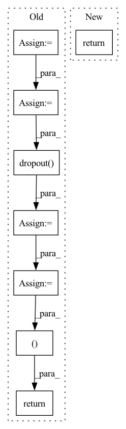

Pattern ID :9533
Before Change
past_key_values = past_key_values.permute([2, 0, 3, 1, 4]).split(2)
if self.config.is_encoder_decoder:
decoder_input_tokens = self.decoder_input_tokens.unsqueeze(0).expand(batch_size, -1)
decoder_temp_control = self.decoder_wte(decoder_input_tokens)
decoder_past_key_values = self.decoder_control_trans(decoder_temp_control) //bsz, seqlen, layer*emb
_, decoder_seqlen, _ = decoder_past_key_values.shape
decoder_past_key_values = decoder_past_key_values.view(batch_size, decoder_seqlen, self.match_n_decoder_layer * 2, self.match_n_head,
self.match_n_embd)
decoder_past_key_values = self.dropout( decoder_past_key_values)
decoder_past_key_values = decoder_past_key_values.permute([2, 0, 3, 1, 4]).split(2)
return (past_key_values, decoder_past_key_values )
return (past_key_values,)After Change
past_key_values = self.dropout(past_key_values)
past_key_values = past_key_values.permute([2, 0, 3, 1, 4]).split(2)
return past_key_values
def generate_parameters(self) -> None:
rIn pattern: SUPERPATTERN
Frequency: 3
Non-data size: 8
Instances Fragment ID: 33966598
Project Name: thunlp/openprompt
Commit Name: 3b447c9d4ffc817086ffe4504fa97a844fc60c48
Time: 2021-10-11
Author: shengdinghu@gmail.com
File Name: openprompt/prompts/prefix_tuning_template.py
M Class Name: PrefixTuningTemplate
N Class Name: PrefixTuningTemplate
M Method Name: get_past_key_values(2)
N Method Name: get_past_key_values(2)
M Parent Class: Template
N Parent Class: Template
M File Name: openprompt/prompts/prefix_tuning_template.py
N File Name: openprompt/prompts/prefix_tuning_template.py
M Start Line: 97
M End Line: 112
N Start Line: 100
N End Line: 102
Before Change
question_padding = question.data == self.pad_idx
context_embedded = self.encoder_embeddings(context, padding=context_padding)
question_embedded = self.encoder_embeddings(question, padding=question_padding)
// pick the top-most N transformer layers to pass to the decoder for cross-attention
// (add 1 to account for the embedding layer - the decoder will drop it later)
self_attended_context = context_embedded.all_layers[-(self.args.transformer_layers + 1):]
final_context = context_embedded.last_layer
final_question = question_embedded.last_layer
if self.projection is not None:
final_context = self.dropout(final_context)
final_context = self.projection(final_context)
final_question = self.dropout( final_question)
final_question = self.projection(final_question)
context_rnn_state = None
question_rnn_state = None
if self.args.rnn_layers > 0:
batch_size = context.size(0)
if self.args.rnn_zero_state == "zero":
zero = torch.zeros(self.args.rnn_layers, batch_size, self.args.rnn_dimension,
dtype=torch.float, requires_grad=False, device=context.device)
context_rnn_state = (zero, zero)
question_rnn_state = (zero, zero)
else:
if self.args.rnn_zero_state == "cls":
packed_rnn_state = self.norm(self.pool(context_embedded.last_layer[:, 0, :]))
elif self.args.rnn_zero_state == "average":
masked_final_context = context_embedded.last_layer.masked_fill(context_padding.unsqueeze(2), 0)
summed_context = torch.sum(masked_final_context, dim=1)
average_context = summed_context / context_lengths.unsqueeze(1)
packed_rnn_state = self.norm(self.pool(average_context))
// packed_rnn_state is (batch, 2 * rnn_layers * rnn_dim)
packed_rnn_state = packed_rnn_state.reshape(batch_size, 2, self.args.rnn_layers,
self.args.rnn_dimension)
// transpose to (2, batch, rnn_layers, rnn_dimension)
packed_rnn_state = packed_rnn_state.transpose(0, 1)
// transpose to (2, rnn_layers, batch, rnn_dimension)
packed_rnn_state = packed_rnn_state.transpose(1, 2)
// convert to a tuple of two (rnn_layers, batch, rnn_dimension) tensors
packed_rnn_state = packed_rnn_state.chunk(2, dim=0)
context_rnn_state = (packed_rnn_state[0].squeeze(0), packed_rnn_state[1].squeeze(0))
return self_attended_context, final_context, context_rnn_state, final_question, question_rnn_state
After Change
packed_rnn_state = packed_rnn_state.chunk(2, dim=0)
context_rnn_state = (packed_rnn_state[0].squeeze(0), packed_rnn_state[1].squeeze(0))
return self_attended_context, final_context, context_rnn_state
Fragment ID: 33966594
Project Name: stanford-oval/genienlp
Commit Name: 25cc6202b03c0b3866c249cc83412618eb894797
Time: 2020-12-05
Author: gcampagn@cs.stanford.edu
File Name: genienlp/models/identity_encoder.py
M Class Name: IdentityEncoder
N Class Name: IdentityEncoder
M Method Name: forward(2)
N Method Name: forward(2)
M Parent Class: nn.Module
N Parent Class: nn.Module
M File Name: genienlp/models/identity_encoder.py
N File Name: genienlp/models/identity_encoder.py
M Start Line: 63
M End Line: 116
N Start Line: 70
N End Line: 107
Before Change
h = self.relu(self.conv5b(h))
h = self.pool5(h)
h = h.view(-1, 8192)
out = h if feature_layer == 5 else None
h = self.relu(self.fc6(h))
out = h if feature_layer == 6 and out == None else out
h = self.dropout( h)
h = self.relu(self.fc7(h))
out = h if feature_layer == 7 and out == None else out
h = self.dropout(h)
logits = self.fc8(h)
return logits, out
After Change
h = self.pool5(h)
f_list.append(h)
return f_list
Fragment ID: 33966592
Project Name: wamawama/wama_modules
Commit Name: b7fce2569c27fcdb5a4039c452b821fc908997a0
Time: 2022-11-10
Author: wmy19970215@gmail.com
File Name: wama_modules/thirdparty_lib/C3D_yyuanad/c3d.py
M Class Name: C3D
N Class Name: C3D
M Method Name: forward(2)
N Method Name: forward(3)
M Parent Class: nn.Module
N Parent Class: nn.Module
M File Name: wama_modules/thirdparty_lib/C3D_yyuanad/c3d.py
N File Name: wama_modules/thirdparty_lib/C3D_yyuanad/c3d.py
M Start Line: 40
M End Line: 67
N Start Line: 35
N End Line: 59